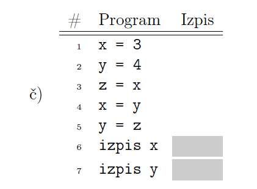

POGLAVJE 03 / 21
Pisanje algoritmov – diagram poteka
Za kaj uporabljamo diagram poteka?
Kaj se zgodi ob znaku
Beri X
Navodilo: Če obstajajo odvečne vrstice, jih prečrtaj in v sive celice zapišite izpis programa.

Ob ukazih si zapišite tabelo trenutnih vrednosti spremenljivk!
| x | y | z | izpis | |
|---|---|---|---|---|
| x=3 | 3 | |||
| y=2 | 2 | |||
| z=x | 3 | |||
| x = y | 2 | |||
| y=z | 3 | |||
| Izpis x | 2 | |||
| Izpis y | 3 |
Vse vrstice so nujno potrebne.